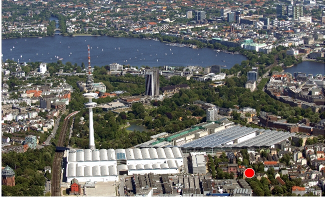

|
„Neue Perspektiven erkennt man häufig erst durch die Veränderung seines Standpunktes.” |

Punktlandung
Hier sehen Sie den
- Fixpunkt
- Wendepunkt
- Ausgangspunkt
- Mittelpunkt
für Ihre PR-Arbeit:
ICF Public Relations-
Consulting GmbH
Vorwerkstraße 4
20357 Hamburg
Karoviertel
(Hamburg-Messe)